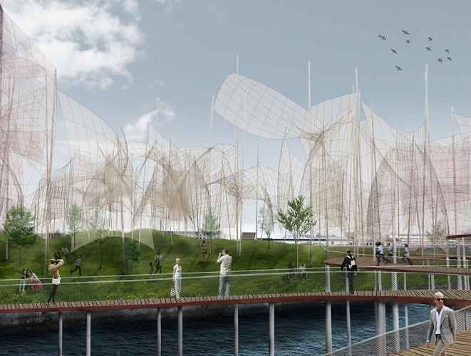

De l’art pour accompagner la transition énergétique
Une compétition internationale invite les candidats à imaginer des installations artistiques
génératrices d’énergies propres pour un parc de Copenhague. Le projet Wind Waker est le premier a avoir
été dévoilé.

A première vue, rien n’indique que les voiles conçues par Miguel Angel Lopez et Julio Alejandro
Romero
Alonso produisent de l’énergie. « Notre projet cherche à montrer aux habitant que les éléments urbains
peuvent produire de l’énergie de façon esthétique. » Le projet des deux designers espagnols a été
proposé à la ville de Copenhague dans le cadre de la « Land Art Generator Initiative Competition », une
compétition internationale qui mêle art et énergies renouvelables. Organisée précédemment à Dubaï (2010)
et à New-York (2012), elle invite des équipes interdisciplinaires à concevoir des sculptures au design
innovant qui soient productrices d’énergie.